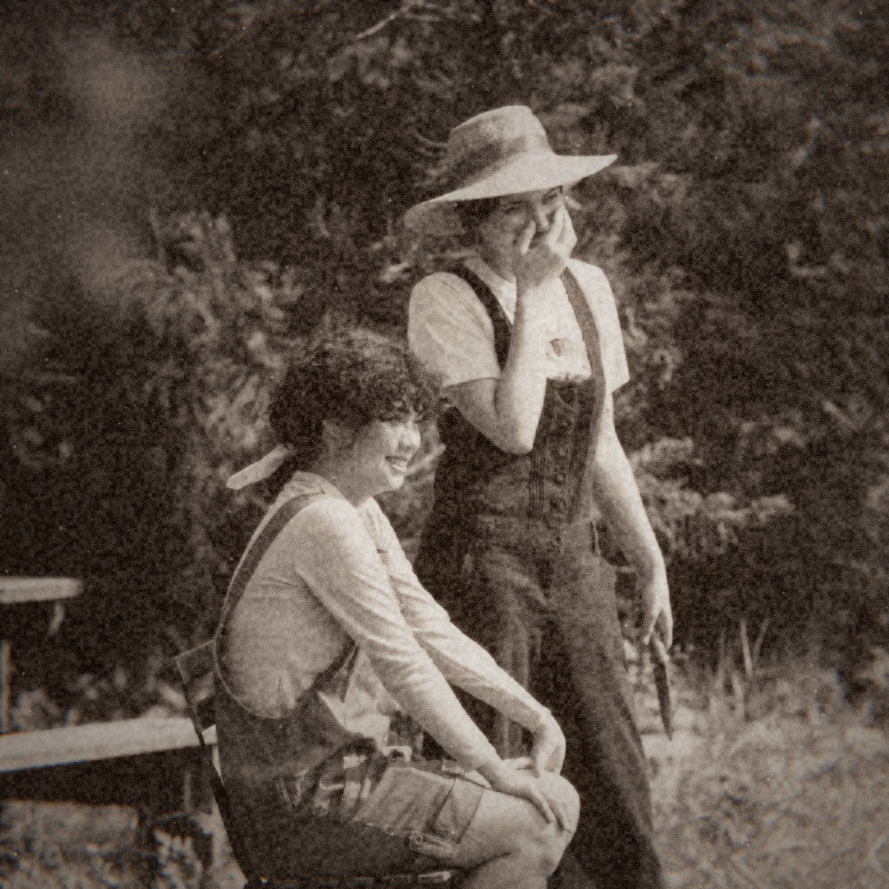

1895 · Free camera era
Give your iPhone photos an 1890s look.
A real before-and-after, the steps to try it, and a few ways to keep faces clear in the frame.
· By Ahmet Kamer Çivi
The Nostalgia Camera blog
Camera looks, real photo comparisons and small things to try on your next walk. Written by Ahmet, the developer.

1895 · Free camera era
A real before-and-after, the steps to try it, and a few ways to keep faces clear in the frame.
· By Ahmet Kamer Çivi

2004 · Photo walk
Six everyday subjects, one camera look, and a way to choose the frames you want to keep.
Updated · By Ahmet Kamer Çivi